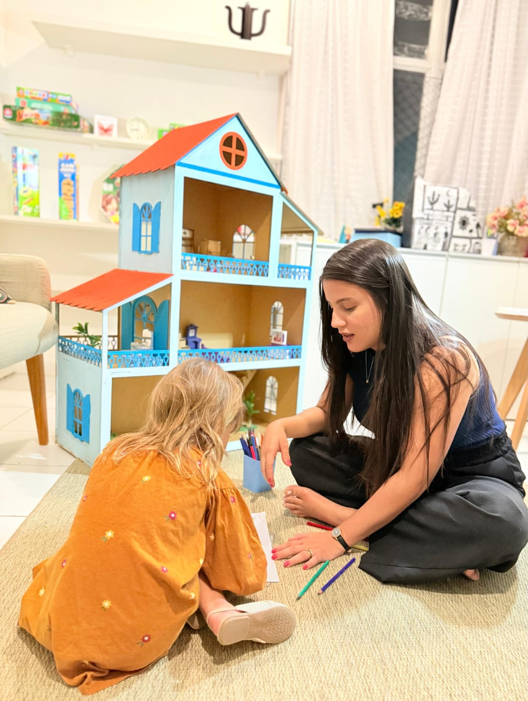

Psicologia Infantil • TCC
Acolhimento e desenvolvimento emocional para crianças
Atendimento em Psicologia Infantil com abordagem Terapia Cognitivo‑Comportamental (TCC), em consultório no Espinheiro – Recife e também online.
Respostas gentis, linguagem acessível e parceria com a família e a escola.
